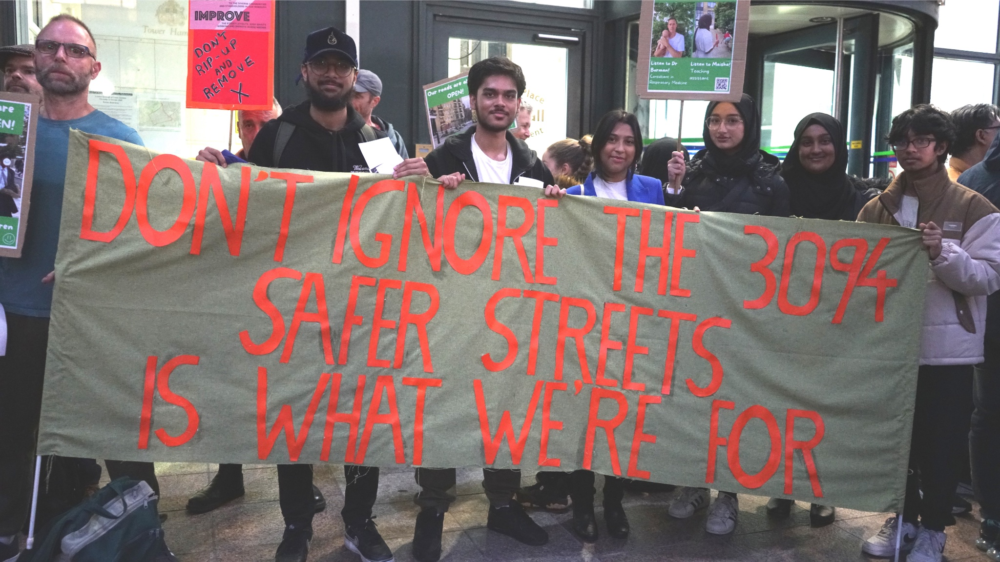

NEWS
Wednesday, 19 April 2023
New report describes flaws in recent Liveable Streets consultations
Pinned Announcement
400+ support the report findings and sign open letter to Tower Hamlets mayor and council.
Since we came together as a group last summer, one of our biggest concerns has been about the way the Liveable Streets consultations have been run by Tower Hamlets Council - both the recent one in February and the one conducted last summer.
This week, we sent a report to the Tower Hamlets mayor, his cabinet and senior officers, laying out the problems we have found with how the recent Liveable Streets consultations were run.
The report was accompanied by an open letter summarising our findings, which was co-signed by the London Cycling Campaign, Oaklands School, Tower Hamlets Wheelers and over 400 locals.
Our report lays out how the conduct of the council has fallen short of the Aspire manifesto pledges at every stage since the May 2022 elections. We explain how their consultation process prevents them from fairly canvassing all views:
- Key stakeholders - Residents and interested parties such as schools, TfL, Bart’s Health Trust and the Met Police, have objected to the mayor’s proposals and have not been listened to.
- Multiple consultations - Re-consulting with the same proposal undermines trust in the democratic process.
- Bias and confusion - Information presented to the public has been extremely one-sided, downplaying the benefits of the current layouts and exaggerating the benefits of “reopening the roads”. The second consultation overloaded people with confusing graphs, unreadable plans and the consultation period was so short that it left insufficient time to ensure clarifications could be sought.
- Process - Many people have been excluded from the process due to the lack of warning, in-person events and confusing documents. The way that ‘unique survey reference numbers’ have been relied on by the council means that hundreds of local voices have been discounted from the headline presentation of survey results.
Click here to read the report in full. Click here for the open letter.
Tuesday, 11 April 2023
New analysis of 2022 consultation results
Pinned Announcement
SOSS campaign discovers hundreds of local residents’ views were excluded from LBTH Council’s consultation report
Today we issued a press release and data sheet that show Tower Hamlets Council didn't include hundreds of local residents’ responses in its analysis of last summer’s Liveable Streets consultation.
Removing these responses significantly changed the outcome of last year’s survey, which was only revealed when the council launched the second consultation in January.
The information we have now received in response to an FOI request shows that over 400 resident responses in the Bethnal Green area and over 200 residents’ responses in the Weavers area were excluded from the data the council published as “local responses”. This meant that up to 28% of local residents’ views were disregarded in the council’s analysis for some areas.
The responses were excluded because they didn’t use the code from the paper consultation packs, even though their postcodes should have been enough to identify them as ‘local’.
Our analysis shows that when these residents’ responses are included, the results reveal significantly stronger support for keeping the current street layouts.
Friday, 17 March 2023
Press coverage - TfL response
Announcement
"Tower Hamlets Council 'misrepresented' TfL on Liveable Streets"
Roman Road LDN has published a piece which reveals that Transport for London believes it was 'misrepresented' in Tower Hamlets Council's latest round of public consultations about Liveable Streets.
This has recently come to light through a Freedom of Information request in which TfL Strategy Officer Alex Williams writes, in a letter to Tower Hamlets Council:
“[W]e firmly support retention of the LTN on Old Bethnal Green Road. We have offered funding and resources to progress further bus priority measures on Hackney Road, to address any impacts caused by the LTN."
By contrast, the council claimed that TfL supported removal of the LTNs, claiming delays to busses on Hackney Road. Campaigners are concerned that this could have imapcted the consultation results.
Read the article here.
Wednesday, 15 February 2023
Sign the Save Our Safer Streets open letter
Announcement
We have written an open letter to the Tower Hamlets council and mayor in response to the latest consultation.
In our letter, we highlight the growing body of evidence in support of retaining the current road layouts. We maintain our position that "keeping and improving" the current schemes is a much better option for people in Bethnal Green, Weavers, Brick Lane and everyone who lives, works, studies and visits Tower Hamlets.
Our July 2022 open letter in response to the previous consultation was signed by 934 Tower Hamlets locals and was included as a stakeholder response in the 2022 consultation outcomes reports (see here for Bethnal Green and here for Weavers).
Read our current open letter in full here. To sign, fill out this form. Please also share with your network! Anyone who lives, works or studies in Tower Hamlets can sign.
Tuesday, 14 February 2023
Press coverage of campaign
Announcement
"Tower Hamlets mayor accused of ‘culture war’ against low-traffic schemes"
Harriet Grant has written a piece for the Guardian, covering the backdrop to Tower Hamlets council's second consultation and their proposal to remove our safer streets.
We're proud to have the forceful words from our very own Jane Harris given such prominence.
“We answered a consultation on these areas last year and the result showed a majority of respondents want the safer streets schemes to stay in place. He promised in his manifesto to be a listening mayor – so why does he need to be told twice?...
He is supposed to be everybody’s mayor but we feel he is going to war – that this is a culture war. It does not have to be this divisive, we have had constructive conversations with residents who question the scheme.
Read the article here.
Monday, 30 January 2023
Head teachers sign letter of support
Announcement
Head teachers from Old Bethnal Green Road and Weavers Ward sign letter in support of new road layouts.
Breaking news: In a show of solidarity, head teachers from Lawdale Junior School, Elizabeth Selby Infant School, Virginia Primary School, Columbia Primary School and Oaklands School all sign a letter to Tower Hamlets Council supporting the new road layouts. The head teachers say they want to protect children’s health and safety and that means rejecting the Council's proposal to remove the low-traffic areas. They ask the council to reconsider and work with them and other stakeholders to improve the current layouts.
We're sharing the content of the letter below.
You can download a PDF (723 kb)
here.
Dear Mayor Rahman,
We the undersigned are all headteachers of the schools located within the Old Bethnal Green Road and Weavers “Liveable Streets” schemes and we would therefore be severely impacted by the proposals the council published on 19 January.
We have experienced Bethnal Green before the new street layouts and after. And it is clear to all of us that the recent changes to our local streets have brought about significant improvements to the safety and health around our schools.
Before, the immediate area around our schools was dominated by speeding vehicles, noise and fumes. Now, we can see from the data provided that there has been a significant reduction in cars using the roads around our schools and that this has positively affected air quality.
From the summer 2022 consultation results that you have recently published, we can see that support for the changes is a majority view in Bethnal Green and Tower Hamlets as a whole.
Are the current schemes perfect? Surely not. Can they be improved? Yes, we think so.
Ofsted requires us to identify and mitigate threats to children’s health and safety and the proposals are a threat to safe arrival and departure from school. Ofsted also requires us to communicate with stakeholders and this is why we are speaking out to make our position on this issue clear.
That is why we are deeply concerned by the proposals you have published at the start of a three-week consultation process. You haven’t put forward any options for improving the schemes by building on what we currently have. Instead, you are presenting a choice between reopening roads such as Old Bethnal Green Road to more than 6,000 vehicles per day or keeping the layouts as they are.
You are furthermore confusing matters by saying that schools such as ours will only be able to benefit from improved pedestrian crossings if the current street layouts are removed. Why should we have to choose between a safe, low-traffic area for our students and a zebra crossing outside our school? Controlled crossings in sensible places would significantly improve the current layouts, without the need to re-introduce thousands of dangerous and polluting vehicles every day around our schools.
Please reconsider your proposal and work with us and other stakeholders and the wider community on a third option, which accepts that the current layouts are popular and successful, but could be better. Don’t go back to square one. Look to improve what is already there. You are very welcome to meet us at one of our schools and walk around the neighbourhood to find out more for yourself.
Yours Sincerely
Annette Rook, Headteacher Lawdale Junior School
Ann Wood, Headteacher Elizabeth Selby Infant School
Barbara Lo Giudice, Headteacher Virginia Primary School
Oliver Woodward, Headteacher Columbia Primary School
Simon Ramsay, Headteacher Oaklands School
Friday, 20 January 2023
Tower Hamlets' re-run of Liveable Streets consultation very misleading
Announcement
We urge residents to “see through council’s greenwash” and vote to keep the current street layouts.
We at Save Our Safer Streets are shocked and disappointed at a consultation launched by Tower Hamlets Council (19 Jan ‘23) on the future of Liveable Streets schemes - six months after a previous consultation on the same proposals.
The results of the last consultation, which have not been published until now, show wide-ranging support for the current street layouts.
We urge residents who support the low traffic schemes to see through the flawed and very misleading text in the new documents and vote for Option 2 - to keep the new layouts. Option 1, to remove the schemes, amounts to blatant greenwashing.
It's good that the new consultation document contains evidence which was missing in the last one, but it also contains many baseless claims. For example, it claims that ripping out both dedicated cycle lanes and quieter, traffic-free social spaces will encourage people to walk, cycle and socialise, as long as the council also puts in a few plants and a handful of new crossings and three dropped kerbs. This is nonsense. Who will cycle or walk more or sit on a solitary bench with 6,000 more cars thundering along Old Bethnal Green Rd?
We're pleased the council have included some of the clear evidence that the schemes are working. Their data shows that the new layouts have improved our neighbourhoods, reducing traffic across the area by 9,700 vehicles a day and introducing better, safer, walking and cycling routes. Residents living near the schemes supported all the current measures except one. Across the borough, support for the schemes was overwhelming.
Despite this positive data and clear local support, the Mayor and council are choosing to ignore the first consultation and the second biggest petition ever in the borough. They are trying yet again to push their same old idea - one that will cost millions of pounds.
The council’s suggested changes will have a wide impact, putting at risk much-needed improvements to Hackney Road including a proposed new bus lane which Transport for London have said can only be put in if the current street layouts remain.
So far the Mayor has ignored our repeated requests to work together respectfully to find ways to keep what is successful in the area and build on that. We believe the best solution is to listen to local people, keep the current layouts and make smaller, cost-effective changes if necessary.
Again, we urge the people of Bethnal Green to look beyond the false claims from the council and not be overwhelmed by the details in the 20-page document. As residents we need to show we still care about our streets being healthier, friendlier and safer for children, disabled and older people and all of us. Choose Option 2 – to keep the schemes. This is the only way to avoid wasting a lot of money and taking our neighbourhood back to the noisy, unhealthy and unfriendly past.
Wednesday, 28 December 2022
Reflecting on 2022
Comment
As 2022 draws to a close, we've put together a campaign update, reflecting on successes, learnings and next steps.
Thank you all for your continued support, and let's keep up the fight in the new year!
Thursday, 6 October 2022
Our record-breaking petition dismissed out of hand by “listening council”
Announcement
Thanks to all our supporters who helped trigger a debate at the Tower Hamlets council meeting last night. Our record-breaking petition with 3094 signatures – the highest number of any roads-related petition ever on the council website – got us there!
We’re so proud of what we achieved in the meeting but very disappointed by the stonewalling and extremely partisan political behaviour from Aspire party councillors.
Our petition asked the council not to rush ahead with its plan to “reopen the roads”, but listen to community voices, experts and data before making decisions more likely to “please almost everyone”.
Outside the meeting we had a fantastic noisy showing including students from Oaklands Secondary School."
Inside, speakers for the petition, acting on our behalf, were Simon Ramsay, headteacher of Oaklands School in Bethnal Green, Jane Harris, a carer for her disabled husband, and Shaheena Parvin, a mother of five and Aspire voter, who spoke movingly of the way the new street layouts have transformed life for her family – especially her four-year-old autistic son.
After the meeting, Jane Harris said:
“I was so proud of the three of us this evening – and of the 50 supporters who came all the way to the Town Hall on a rainy weeknight to show how much they want safer, healthier, friendlier streets. We had taxi drivers, school children, a real mix of ages and ethnicities, staging a peaceful and colourful demonstration.
“Our group has worked hard for months to show the council how people really feel about the street schemes. We’ve met with councillors, sent them an 900-signature open letter, submitted one of the borough's biggest ever petitions and a range of stories about the benefits of the schemes for a diverse range of residents. We’ve drawn their attention to letters from schools, Barts Health and TfL. We’ve even published our own data analysis, assembled through FoI requests. They also have the results of their own consultation, which they haven’t shared.
“We hoped that ‘the mayor who listens’ would take all this evidence on board and actually engage with us, instead of just talking about listening. This was a great opportunity for him to alter his approach.
“It was extremely disappointing, to have our efforts belittled and dismissed by Aspire councillors who seemed not to have heard anything we have been saying. Their response to us all along has amounted to stonewalling. They are still choosing to repeat unfounded claims about issues with the schemes and never mentioning the real benefits. We’re still none the wiser about timelines or decisions about our streets.”
Jane said that a minority of councillors did show willingness to engage.
“We were really pleased that Councillor Asma Islam for Labour tabled a motion which supported many of our asks,” she said. “She said this shouldn’t be a party political issue. But Councillor Kabir Ahmed’s speech, for Aspire, was more focused on scoring political points than addressing the valid concerns of thousands of his constituents. He belittled and dismissed us. This was extremely partisan political behaviour.
“We came away shocked by his lack of any respect for the 3,094 people who have signed our petition. Why is Aspire so stuck in the past, instead of working to improve things now and for the future?”
We heard later in the meeting, Mayor Rahman announce that he would be keeping the Wapping bus gate, citing “evidence and responses to public opinion surveys.”
Responding to this, Jane continued:
“We are pleased about the bus gate, but we’re incredulous to hear that he based his decision on evidence and consultation results when he still hasn’t published any. This doesn’t feel like a listening approach to us.
“There's a long way to go. We’ll know the mayor is really listening when he and his councillors respond to our campaign asks and acknowledge what so many people keep trying to tell them – that these schemes have massive benefits.”
Unsatisfied by the council’s response, we are considering our options for next steps, including a possible legal challenge.
Monday, 3 October 2022
Our data analysis shows Bethnal Green LTNs are not causing pollution or delays
Pinned Announcement
We at Save Our Safer Streets campaign are challenging the new Tower Hamlets Mayor and Council to publish local data on emergency service response times, air quality and traffic congestion. This is after our own analysis has shown that the new street designs in Bethnal Green have had a far more positive impact than the mayor and others have claimed.
Our analysis, using FoIs and public domain data, has shown that:
- There has been NO increase in fire service response times since the installation of the new road layouts and Low Traffic Neighbourhood (LTN) schemes. This is both across Tower Hamlets as a whole and for the five wards where they have been installed.
- There has been NO increase in ambulance response times attributable to the LTN schemes in Bethnal Green. Category 1 response times remain stable in E2 after the installation of LTNs, and Category 2 response times in the E2 LTN areas are comparable with Tower Hamlets as a whole.
- There has been NO increase in journey times on boundary roads attributable to the LTNs - journey times have increased on all roads at a similar rate. Eastbound journeys on Hackney Road have increased by 30 seconds at most, but this is likely to have several causes such as repeated roadworks and LTNs in neighbouring Hackney.
- Air quality is now dramatically better across all of Tower Hamlets than it was in 2019, and from 2021, annual average pollution levels in Tower Hamlets have fallen below the national target. These falls are matched in areas surrounding and including LTNs.
We are publishing our analysis today on a question and answer page. Some of our research is presented in a ‘look-up’ format where you can find further details and analysis on emergency response times, air quality and traffic congestion.
We’re also highlighting a letter to the mayor from Transport for London (TfL), in which it objects to the council’s plans to remove the current schemes and said the council’s consultation did not provide enough evaluation to support its proposals. TfL also says its plan to put in a new bus lane in Hackney Road cannot go ahead if Tower Hamlets council rips out the street design in Old Bethnal Green Road. Our petition on the council’s website to save the scheme and improve it instead of ripping it out closed with 3,094 signatures (the second highest for any TH e-petition).
Friday, 14 October 2022
FT Letter
Announcement
Juliette Tuke has a short comment in the Financial Times in response to Janan Ganesh's "Why I, a non-driver, wish the car well".

Monday, 29 September 2022
Campaigners respond to Mayor Rahman’s statement about the future of Liveable Streets
Announcement
Responding to Tower Hamlets Mayor Lutfur Rahman’s statement at the cabinet meeting on 28 September, Simon Ramsay, headteacher of Oaklands School on Old Bethnal Green Road, said:
“There was some positive new information in the Mayor’s announcement, such as a commitment to ‘grasp all the issues affecting our residents on both sides of the debate’. However, we are disappointed to hear him repeat many unproven claims about the impacts of the new street layouts. It’s frustrating that he didn’t share the results of the recent consultation either, six weeks after it finished.
“Our petition, signed by over 3,000 locals, asked him to take the time to listen. He says that he will, and we hope this means he will truly take all views on board.
“If he were to listen, he would hear from many people right across the community whose lives are made better by the new streets, as we have. He would hear, as our own painstaking research shows, that air quality is now better across all of Tower Hamlets than it was in 2019 and that the changes haven’t had a significant impact on traffic on boundary roads.
“If he were to listen, he would note the letter he received from TfL which said that if he ripped out the Old Bethnal Green Road design, this ‘... would prevent TfL introducing a bus priority scheme on Hackney Road as cyclists who currently benefit from the scheme would be forced back to use that road.’
“We were glad to hear the mayor talk about his commitment to net zero emissions and to working with the community to encourage people to move away from car use towards public transport and active travel. We strongly support these aims, but we’re baffled that he thinks they could be compatible with removing the street improvements that help people to walk and cycle.
“The mayor says he will provide updates on this issue ‘in due course’. A good opportunity would be 5 October, when the council will debate the petition I submitted to ‘Save our safer streets in Tower Hamlets’.
“We will be asking the council to publish evidence about the impact of street layout changes and release the results of the consultation, two months on from its closure. We are calling on them to allow time for a thorough process that looks at any specific issues that need to be addressed, with specific solutions, before reaching any decision.”
Monday, 27 September 2022
Evening standard coverage
Announcement
Ross Lydall, from the Evening Standard, has published an article covering our save our safer streets campaign. The article covers our recent successes in pausing the removal of the new road layouts, mobilising over 3,000 community members from Tower Hamlets to sign our petition, and crowd-funding over £16k to support a legal challenge.
We're thrilled to see coverage like this is such a high profile newspaper!
Monday, 26 September 2022
Petition closes with over 3,000 signatures!
Announcement
Our petition has closed today with an amazing 3,094 signatures, making it the second most-signed petition in Tower Hamlets ever! We saw people from across the community come together to ask the council to STOP, LISTEN and IMPROVE, instead of scrapping our safer, friendlier, healthier streets.
This fantastic show of support smashes the council’s threshold of 2,000 signatures – the number needed for them to hold a debate on the issues raised – and gives them an idea of just how many local people want them to take more care over the future of our streets.
We owe this great campaign milestone to everybody who signed the petition and spread the word. Special thanks are due to those tireless volunteers who hit the streets with flyers, day after day, to make sure everyone in the neighbourhood heard about the council’s plans and got the chance to raise their voice.
THANK YOU EVERYONE!
We hope the debate might lead to a process of listening and collaboration between the council and the community. But this is far from over, so please stay tuned to find out what the mayor announces this Wednesday, and to hear more about the council debate on Wednesday 5 October.
Wednesday, 21 September 2022
Save Our Safer Streets success!
Tower Hamlets Council PAUSES plans to rip out street improvements in Tower Hamlets
Pinned Announcement
Today we can say with some confidence that Save Our Safer Streets is having an impact on Tower Hamlets council.
In August, the council approved its strategic plan, which said that it would decide to “reopen the roads” in September and then rush to implement that decision in October. The council was publicly committed to rushing through its proposals.
Today we know that their decision on “reopening the roads” is NOT going to be pushed through in September. It is on the agenda for the 28 September 2022 cabinet meeting as an announcement, which means that no decision is going to be made.
OUR CAMPAIGN ACTIVITIES IN AUGUST AND SEPTEMBER BEAR FRUIT
Our Save Our Safer Streets activities in August and September have contributed to this change of heart by the council:
- A whole cross-section of Tower Hamlets residents have written to the mayor and his councillors, gone along to surgeries and shared their stories online, using their voices to show all the different ways that the new street layouts have benefitted them and their families.
- 2,600+ people who live, work or study in Tower Hamlets have signed the petition started by Simon Ramsay, headteacher at Oaklands School on Old Bethnal Green Road, calling on the council to stop, listen and improve the new street layouts rather than rush to remove them. This is the highest petition currently on the Tower Hamlets website and the second highest in its history!
- And more than 220 people have donated over £16,000 to the CrowdJustice campaign, which is funding a potential legal challenge to the flawed process the council is currently pursuing.
WHAT DOES THIS DELAY MEAN?
This delay to the council’s plan is a meaningful win for our campaign – in fact you could say that we are a step closer to achieving step 1 of our petition:
1. We petition the council to STOP plans to scrap the new street layouts so there is time to reach a justified decision.
SO WHAT’S NEXT?
We now know the mayor will make an announcement, rather than a decision, about Liveable Streets at the cabinet meeting on 28 September, and we’ll be watching closely to see what he says. We would expect him to talk about the results of the consultation and share more information about his timetable.
We can’t be sure what the announcement will be, but we now have some time to move on to the other parts of our petition, starting with step 2:
2. We ask the council to LISTEN to residents, businesses, schools and service providers across our diverse community to understand the benefits of the new street layouts, as well as any issues.
A thorough debate at the 5 October full council meeting will be a good start, so that all our elected representatives can share their views. It is thanks to everyone’s efforts that there are enough signatures on the petition to trigger the debate.
We are preparing our plans for the 5 October meeting of the full Council and we look forward to the discussion and debate that follows. We hope that the council meeting is the beginning of an ongoing dialogue with the council which could culminate in step 3 of our petition:
3. We want to find ways to IMPROVE, not hastily remove the new street layouts.
We have always said we would much rather work with the council, stakeholders and the whole community to come up with ways to improve what we have, rather than challenge any unlawful decision through the courts.
THERE’S PLENTY MORE TO DO – SO STAY IN TOUCH
We would like to thank everyone who is contributing to this campaign. Stay posted with what’s happening over on Twitter and Instagram – and please do keep pointing people towards the petition (open until 25 Sept) and the CrowdJustice page if they want to show their support for keeping and improving, rather than removing, the new street layouts in Tower Hamlets.
Tuesday, 20 September 2022
Local magazine reports TFL's disappointment with TH's Council on removing new road layouts
Announcement
Polly Nash, in the local community Roman Road LDN magazine, has written about Transport for London's (TfL) disappointment with the Tower Hamlets' consultation that seeks support to remove the new road layouts.
Citing TFL communication with the Tower Hamlets council, the article makes clear TfL are in favour of the new road layouts. London's public transport organisation has invested in the safer road scheme and suggests its removal could put further funding in jeopardy.
Monday, 5 September 2022
We need your help with a potential legal challenge
Announcement
Reopening the streets is already in the council’s strategic plan for October, and the final decision will be made on 28 September. At Save Our Safer Streets, we fear the only way the mayor will listen to us is through a legal challenge, and we need to prepare it now or it’ll be too late.
We’ve launched our CrowdJustice fundraiser today because we know that our safe, healthier, friendly streets mean so much to our community. Please support us with a pledge if you can, and help us to spread the word.
Visit the CrowdJustice fundraiser page
Click here for more information about our legal challenge and what we need from you.
Thursday, 25 August 2022
Article in East London Advertiser
Announcement
Shaheena Parvin voices her support for Save Our Safer Streets in the East London Advertiser's Community View section.
As Shaheena puts it, "something beautiful happened" when they changed Old Bethnal Green Road. The road is safer so children can play and people can meet and talk. She wants Aspire to follow their election promise to listen to everyone, "including the quieter ones who have most to lose."
If you want the save our safer streets and make sure the Mayor and Aspire party listen to everyone, sign the petition to the Tower Hamlets Council.
Friday, 2 August 2022
Spreading the LOVE ♥
Comment
It makes us happy to see successes for low-traffic neighbourhoods, worldwide.
Before I get too far away from it, I wanted to share a bit about how amazing yet simple Barcelona's Superblocks are. pic.twitter.com/Xn5WBaDkNj
— Luke Spray (@lukespray) July 26, 2022
The most noticeable thing about the Superblocks isn't the planters or paint or anything like that, it's actually how quiet they are. People are sitting (and napping!) out there not just because of Spanish culture or the weather, but because these blocks are really peaceful. pic.twitter.com/bKAWUksPzu
— Luke Spray (@lukespray) July 26, 2022
They say there isn’t room for safe, protected bike-lanes. They say there isn’t room for shade-creating, air cleaning street trees. Montreal shows that when you change your space priorities, you get better streets for EVERYONE. HT @DaveLikesBikes for video: pic.twitter.com/zzEE7H2IXN
— Brent Toderian (@BrentToderian) July 30, 2022
Thursday, 11 August 2022
Petition to Tower Hamlets Council
Action
Sign our new petition which has gone live on the council website.
We are asking the Council to:
- STOP plans to scrap the new street layouts
- LISTEN to the diverse communities and stakeholders in our borough
- IMPROVE the new street layouts to keep what is working and improve where needed
By signing, you’ll help to make sure the council knows how many people want to keep our safer streets. And with enough signatures we can force the council to have a proper debate about ‘reopening the roads’.
Friday, 29 July 2022
Improve the new roads don't remove them
Comment
On the 21st July, TV One News visited Old Bethnal Green Road and spoke to two local residents, Abdul Woahid and a passer-by. Before the scheme went in they had some reservations but more recently they have come to appreciate the changes to the road.
Abdul:
"First, we struggled with the road closures. There are four schools on this road. The risk was dropping kids off and picking them up."After the closure, thank God, the drop-off and pick ups have become safer and this is better for us."
Second resident:
Old Bethnal Green Road is much safer for the children and if the side roads can be opened that would help, and be better.
Abdul:
Improve the new roads but do not remove them. Leave Old Bethnal Green Road as it is. It's better - safer for us. Removing them will be costly for us, for Tower Hamlets Council.
The short clip from TV One's news programme shows how locals such as Abdul have come to see the value of the new road layouts. They aren't perfect, but they feel safer for parents. Rather than calling for them to be removed, there is support across the community for working together to develop ways to improve them.
The original TV One news broadcast can be seen here.
Sunday, 24 July 2022
Tahura and Yusuf
Story
Tahura, a mum of four including her son Yusuf, says:
"I bring my children through Old Bethnal Green Road every weekend and I like how we can walk through without worrying about traffic. Now we have this pedestrian area, everyone can access the park easily. I think, what's the point of green space if it's surrounded by traffic? Spaces like this are so important when we haven't got our own gardens."
Sunday, 24 July 2022
More cars on roads only benefits the few
Research
The changes the council is proposing are in the name of helping car owners. Yet car owners do not make up the majority of those living in Tower Hamlets.
Less than a third of households have a car in the borough. This is the lowest proportion of car ownership per household across London. And this proportion is falling faster than in other parts of London. There has been an 18% decline in the decade since 2010.
This doesn't mean there are less cars on our roads. Tower Hamlets population is growing and, although car ownership as a proportion of the population is falling, total car numbers are going up.
This isn't a good situation: more cars, even more people, and all in the same densely populated space. We need to discourage driving and we have to put more thought into designing streets where people can walk, talk and play safely.
Our information is sourced from Centre for London's report "Reclaim the kerb: The future of parking and kerbside management", Appendix 1.
Friday, 22 July 2022
I want it better, not worse!
Story
"I voted for the mayor, but not so he could destroy my area!" says Saciido. "I want it better, not worse!"
The nursery nurse and mother-of-one was "heartbroken" when she heard that her favourite seating spot on Old Bethnal Green Road might be taken away.
She says her neighbours in the building just behind the communal area are equally upset.
"Why do they want to remove this? They only put it in a year ago. I was so shocked when I heard about the plans."
She says her neighbours in the building just behind the communal area are equally upset.
"A lot of older people come out and sit here. When I explained the situation to them, they said 'No! They can't take this from us, it's not right! It's the only place we have to go when the weather is good.' That touches my heart, because they are like my grandmas, you know?"
Saciido moved to the area from Shoreditch seven years ago with her son, who is now at university and likes to play basketball on Middleton Green.
"We don't have our own gardens. I come down here, I use my phone, I watch my son playing in the park. Sometimes the children come over here playing. I watch them and I say, 'Thank you God, at least we have this space.'
"And now someone wants to come here and use it for cars and parking."
Saciido says that Old Bethnal Green Road was 'horrible' before the changes.
"There were a lot of cars here, it was noisy and dangerous for vulnerable people. Look at it now! I want to keep it like this. It's precious, like a diamond."
What she really wants to see is people working together.
"We love our area, the good and the bad. Tower Hamlets is a nice borough. If we talk, listen, work together, we can improve things for our children. I'd tell the mayor, improve things, don't destroy them! Don't take this place away, leave it alone!"
Friday, 22 July 2022
Let's not throw away £2m
Research
Almost £2million pounds has been spent on improving the streets in Bethnal Green. These were improvements that 68% of those who responded to a consultation voted for (see freedom of information request Ref. 33087276).
The introduction of traffic calming, green spaces, and seating areas, designed to reduce traffic and pollution in Bethnal Green, has cost £1.834 million of Tower Hamlets Council's money (this doesn't include any project-wide costs spent across the borough). Almost all this amount comes from capital funding that the council get from developers for community infrastructure projects (for a breakdown of figures, see freedom of information request Ref. 27521573).
This council money, that belongs to everyone who lives in Tower Hamlets, is meant to be used on permanent projects designed to improve our borough - new streets, housing and the like. If the improvements in Bethnal Green are removed, the council and residents won't get the money back; it will be wasted. It will also cost more money to put things back the way they were.
Let's not remove the improvements to our streets and waste this money! We want Tower Hamlets Council to consult with residents, businesses and schools to see what can be done to further improve our roads for all.
Thursday, 21 July 2022
Before and after
Comment
Helpful comparison from CleanBethnalGreen. Two versions of Old Bethnal Green Road. Go full screen for the full effect.
— CleanBethnalGreen 🇵🇸 (@BethnalCleen) July 5, 2022
Wednesday, 20 July 2022
Increased traffic is risking people's health
Story
Dr Burman lives in Bethnal Green with his family. He is a Consultant in Respiratory Medicine, having worked in East London throughout his career.
"As a Respiratory Consultant and a father, I am very concerned about the impact of air pollution on the development of children's lungs and the health of those with respiratory conditions. Any changes that increase traffic on residential streets are risking people's health. I think the existing scheme has helped to protect the health of everyone in our community.
"I want to live where the streets are safe for our children to play and where there are spaces for everyone in our community to socialise together. Again, I think the current scheme has been a positive step, but even more could be done to improve this!"
Tuesday, 19 July 2022
Question Luftur Rahman on BBC London
Announcement Action
UPDATE - PROGRAMME POSTPONED
This programme has been postponed till August (see this Twitter post).
We have an ace opportunity this Thursday to get Luftur Rahman to realise how many people care about safer streets. He's appearing on BBC Radio London this Thursday and Eddie Nestor the presenter is taking questions from the public.
Please send your question to eddie@bbc.co.uk.
The more emails we send the more likely Luftur Rahman will have to respond to this issue.
🚨Do you live in TOWER HAMLETS?
— BBC Radio London (@BBCRadioLondon) July 15, 2022
🚨Have you got a question for your leader?
Tower Hamlets' Mayor joins Eddie THURSDAY @ 11am as part of our Meet the Leader series.
Send questions to:
📩Eddie@bbc.co.uk @EddieNestorMBE | @LutfurRahmanTH | @TowerHamletsNow
Tuesday, 19 July 2022
900+ sign letter to keep pedestrian-friendly streets
Action
Today, we've sent a letter to the mayor of Tower Hamlets asking him to hold off from removing the improvements to our streets in Bethnal Green and the borough. We've asked for evidence to be openly shared, a longer consultation period, and full engagement with all the community.
Over 800 people from around the neighbourhood, including schools, businesses and residents have signed the letter so far. Add your name to the live version of the letter.
See our press release here.
Monday, 18 July 2022
Fire brigade report - No noticeable impact
Research
The most recent London Fire Brigade Incident Response Times report (2021) states:
"... we haven't yet noticed any impact on our attendance times due to the LTN schemes established in 2020" (p. 2)
We've yet to see any of the emergency services in London provide evidence of slow-downs from low traffic neighbourhoods and street calming.
Monday, 18 July 2022
Bow is up in arms!
Event Action
Our friends in Bow showed they want they want cleaner, safer streets!
Over 100 local residents say #KeepAntillRoadfilter. Are you listening @LutfurRahmanTH ? @CllrNathalieB @cllrasmabegum @MeotraE3 @thgreenparty @ELAdvertiser @BBCLondonNews @EveningStandard pic.twitter.com/FKadebJExz
— Alistair Polson (@AlistairPolson) July 18, 2022
Saturday, 16 July 2022
No evidence that LTNs have changed fire engine response times
Research
An academic article (Goodman, Laverty, Thomas & Aldred 2021) shows that fire engine response times are not being adversely effected by Low Traffic Neighbourhoods (LTNs).
The article - by academics from Westminster, Imperial and the School of Hygiene and Tropical Medicine - presents a study of fire engine response times in and around LTNs in London. The work focuses specifically on LTNs introduced in 2020 including in our borough, Tower Hamlets. The findings from the research show that there is no evidence to suggest LTNs have increased overall response times. This result applies in central, inner and outer London and whether the LTN uses physical or camera enforced restrictions. Notably, the proportion of delayed 'first engines' fell across all areas after the introduction of LTNs. In addition, reported delays 'due to traffic calming' were "more than offset" by a fall in delays from traffic or roadworks.
Research like this raises lots of questions for us in Tower Hamlets. It's still very early to know how low traffic neighbourhoods are impacting the emergency services in our borough but it's clear we really need to have free access to data, better understand the challenges and think collectively about ways forward.
Thursday, 14 July 2022
Let's Play! - Sunday 17th
Event
We're running "Let's Play", a children's event to enjoy the Middleton Pocket Park, on 11:15-12:00 Sunday 17th.
Thursday, 14 July 2022
We need to move forward as a community
Story

Mehraj Alam, 45, who lives on Teesdale Street and runs a local business, has come to appreciate the changes to Old Bethnal Green Road.
"I was livid when they first introduced it,"" he says. "I drive for work, and it's made that less convenient for me. But I have two kids at schools along this road and it has made the school run a much more pleasurable experience. It's great to walk along there and see other families on the way to school, it feels a lot safer without the morning rush of cars.
"We've bought our eldest a bike to get to school now and it's nice to know he's not breathing so many fumes. I think it's not just good for our kids, but for kids in future years."
Mehraj has some frustrations with the scheme, however, and some suggestions for improvements. He says what he really wants is for his voice to be heard.
"I think we need to calm down a little and talk this through... We have to find a middle ground and work together. Just as we're getting used to the new street, they want to change it back, but they need to talk to us properly first. It affects our daily lives, not theirs!
“What we need to do now is move forward as a community.”
Rob from Save our Safer Streets agrees.
"We're already starting to see the local community come together over this,"" he says. "We know we won't all agree on everything, but there are too many good things about this scheme to chuck it in the bin now. We just want the Council to slow down and listen to the whole community. Keep and improve rather than panic and remove!"
Thursday, 14 July 2022
Before and after
Comment
Old Bethnal Green Road before
Old Bethnal Green Road today
Wednesday, 13 July 2022
It's making a difference to people's lives
Story
Derek Clifford, (81), who has lived on Old Bethnal Green Road for 46 years, says he has made “so many friends” by sitting on the chairs at the junction of Canrobert Street and Old Bethnal Green Road.
“It's a lovely spot!” Derek says. “I don't want it spoiled. People have got used to it now, we love it here. We don't want more changes! If they take away these red chairs, it would kill me. Where else am I going to meet people and talk to my friends? There's nowhere else for me to go.”
Wednesday, 12 July 2022
Collective action
Action
SAVE OUR SAFER STREETS believe the only way we can stop the reversal of the new green spaces and safer streets is to work together.
We need to build a common voice to show we care about the high levels of pollution in Bethnal Green. Collectively, we need to take action to improve safety and the environment for all. What's really important is that this common voice is made up of as many people as possible from across the neighbourhood. We need to show Tower Hamlets Council that a significant majority of people want to build on the improvements that have been made to our streets.
We believe that what we need is more experimentation with our streets; we need to allow our communities to find new ways to reduce pollution and to increase the number of green spaces where we can walk, talk and play.
If you want to join us in this mission take action and join us.
Wednesday, 12 July 2022
Mandate for reversing the new green spaces and safer streets?
Results from 5th May 2022 Local Elections.
Source
Tower Hamlets Council pages.
One of the first things to be aware of is that despite what many people are saying, the Tower Hamlets council do not have a mandate for reversing the new green spaces and safer streets. The new mayor and some new councillors from the Aspire Party did pledge to institute the reversal in the May local elections. However, the votes were not a full endorsement of this pledge. The Aspire party only won 36.95% of the total vote. Labour won 36.53% and the Green Party 9%, and both these parties supported Liveable Streets. It's also worth noting that only 41.84% of the borough voted in the elections.
It's clear that there's a lot to fight for and that many people will want a say on our new green spaces and safer streets.